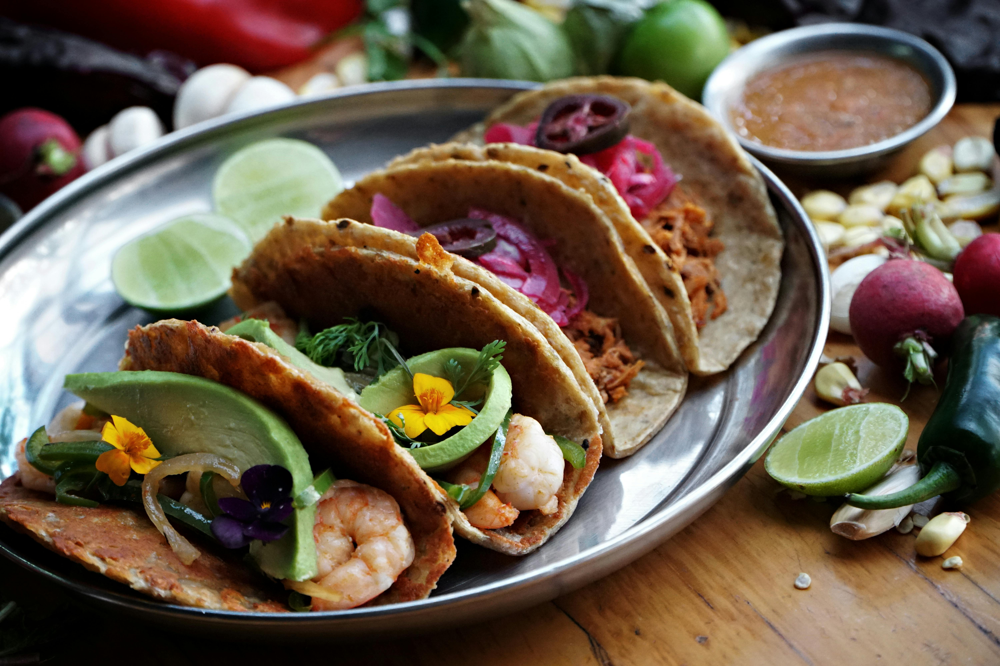

Where Every Bite Is a Fiesta
House-made salsas, slow-braised meats, hand-pressed tortillas — Casa Fuego brings the bold soul of Mexican cooking straight to your table.
Order Online Our Story
Fresh Daily
Bold Flavors
Real Ingredients
Family Owned
Dine-In & Pickup
A Taste of Casa Fuego



Hours
| Day | Hours |
|---|---|
| Monday | 11:00 AM – 9:00 PM |
| Tuesday | 11:00 AM – 9:00 PM |
| Wednesday | 11:00 AM – 9:00 PM |
| Thursday | 11:00 AM – 10:00 PM |
| Friday | 11:00 AM – 11:00 PM |
| Saturday | 10:00 AM – 11:00 PM |
| Sunday | 10:00 AM – 8:00 PM |
Why Casa Fuego?
Our recipes have been passed down through three generations of the Herrera family. Every tortilla is pressed by hand, every salsa is made in-house, and every dish is crafted with the kind of love that only comes from cooking for people you care about.
From our smoky fajitas to our slow-cooked birria, we believe Mexican food is meant to be celebrated — loud, colorful, and deeply satisfying.
Meet the Family🎵 Ambiance
Close your eyes and imagine you're already here.
Watch Us Cook
Chef Elena hand-pressing tortillas fresh every morning.